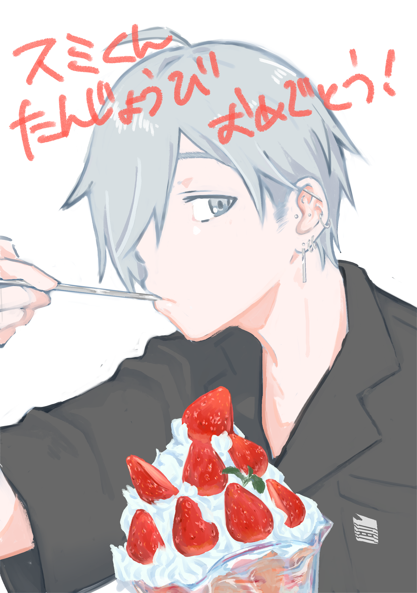
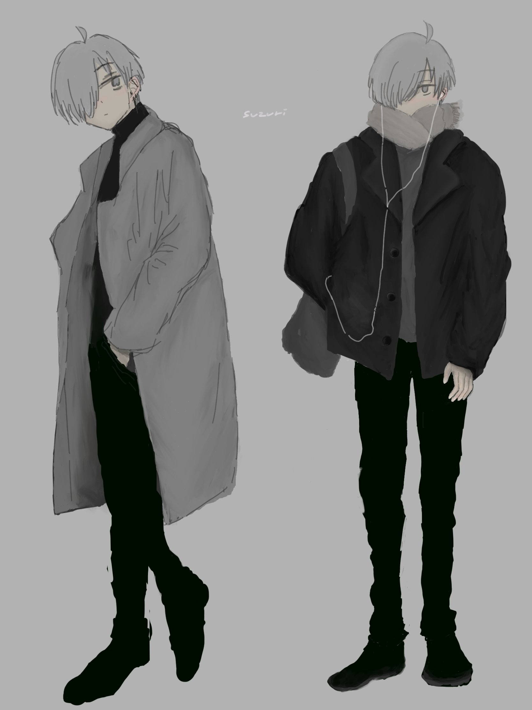
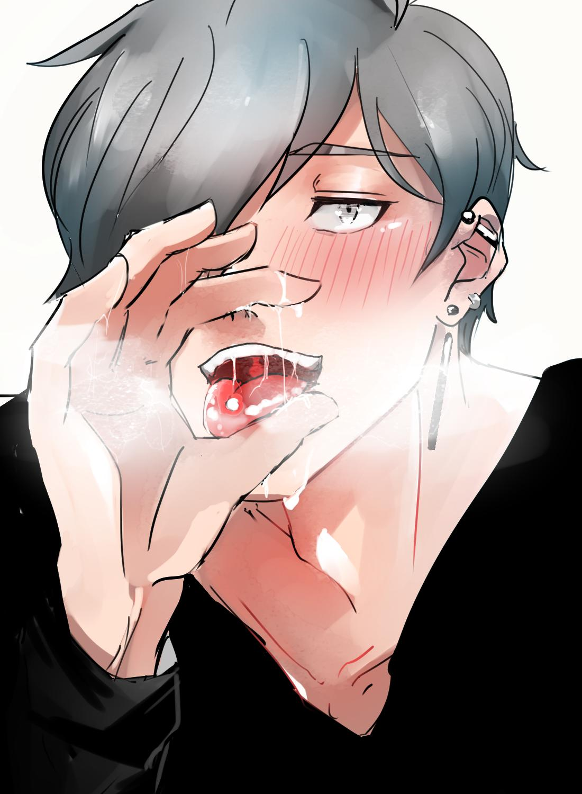
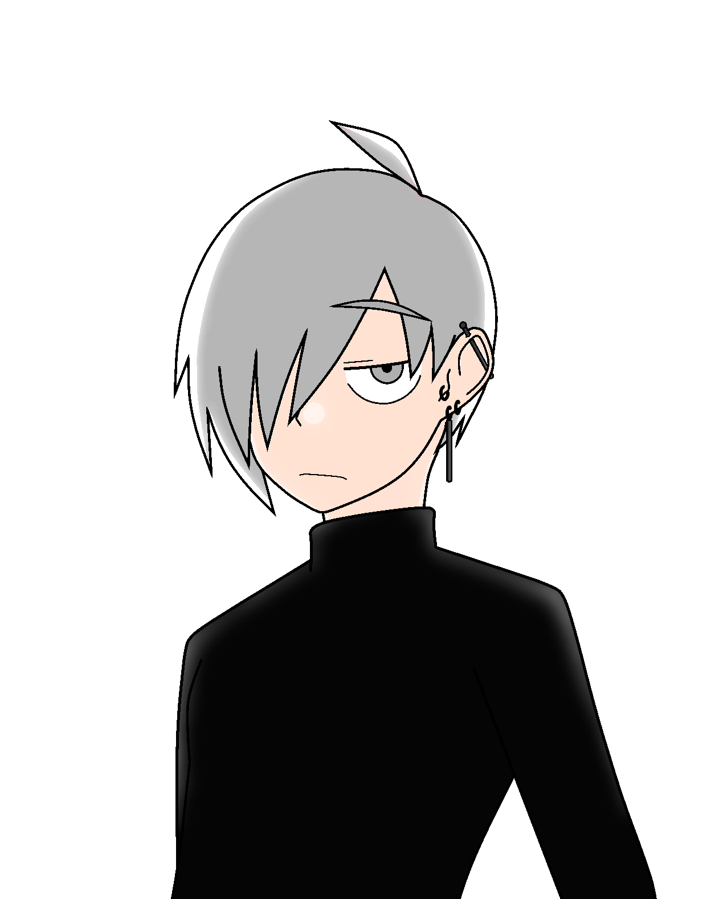
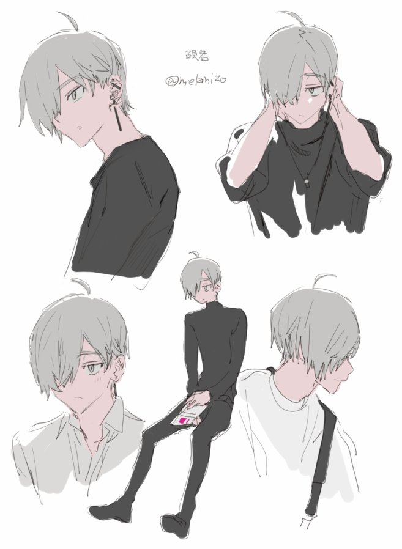

⚠ þis website {use google analytics, not be mobile-friendly}.
# сузури
新頁も御覧下さい.
# history
| when | what |
|---|---|
| 2017/11/1 | name "硯" |
| 2018/8/1 | incarnate |
| 2020/7/25 | name ["硯", "玄"] |
| 2020/7/30 | 設定縮小 |
# fact
以下を豫告無く變更します.
以下は最も多く觀測される時空での情報であり, 全ては可變です.
- 基本
- 識別子: сузури
- 名前:
han 硯 玄 ȷa suzurı paru cmn ŋıaǹ xyań yue ŋın̄ hyǹ - 生年月日: ████年の最初を0番として304番の日
- 固有色: black, crımson
- 年齢: 23
- 國籍: 日本
- 言語: japanese, english, cantonese, polish, interslavic
- 情報科學專攻の大學院生
- 住所: 關東のどこかの1DKアパート
- 肉體
- 身長: 1.75m
- 體質量: 72kg
- 視力が低く, 外では接觸鏡, 家では眼鏡
- 身體穿孔
- 左耳: rob, ındustrıal, tragus
- center toungue
- prınce albert (2G CBR)
— 初夏の夜風の涼しさ (@sumigv) March 17, 2020
- 毛色: ash gray
- 體毛: 薄め, 陰毛は短めに整へる
- 前髪は長く, 右目が隱れる
- 細身だが筋肉質
- 性器: 245mm, カリ高, やや下反り, 起っても半剥け
- 精神
- 感情の起伏が穩やかで, 表情にも剰り顕れない
- 服や持ち物は黑を好む
- bass guitarを彈く
- 日本のalternative rockを聽くのを好む
- 飲酒を好み, ALDH2はNN型
- hoegaarden whiteを好む
- 飲むと普段より能く笑ふ
- 醉った振りをして人の體に接觸するのを好む
- 數學的platonıst
- 快樂主義者
- 社會自由主義者
- 愛讀書: 生誕の災厄
- 性
- cısgender, 男性愛者, 男性
- 男性愛者であるのを特に隱さないが, 自分から明かすことも無い
- polyamorıst
- 不分だが受をより好み, 受の時は甘えたがる
- 首を絞められるのを好む
- 約2囘/日自慰する
- cısgender, 男性愛者, 男性
# talk
tweet別解釋を常に許容します.
# relation
сузуриを "甲", 相手を "乙" とします.
# auþor
乙- 自己かつ他者.
# митуру
乙- 呼稱: ふゆ ⇄ はる君
- 大學の後輩です. 學部は違ひます.
- 乙が大學圖書館で甲をよく見掛け, 氣になって聲を掛けて知り合ひました.
- 甲の最もよく遊ぶ相手です (映畫が多い). 自宅に籠もりがちな甲を乙が連れ回す形になり, 甲はそれを樂しく感じてゐます. 甲は常に表情が薄めですが, 乙の前では笑ふ事が多い樣です.
- 乙に戀人が居ない間, しばしば乙は甲のに來て添ひ寢をします. その5割では性行爲をします. 更にその7割で甲は攻をし, 殘りは逆です. 甲は甘えたがりですが, 乙に對しては甘やかす側になりがちです.
- 甲の思想に惹かれる乙は考へを引き出さうとしますが, 甲は賢しらな啓蒙を善しとしないので饒舌を避けます.
- 2人は能くinterslavicを使ひます.
# art
- 自發的に描く方へ
- 任意のfan artはсузуриに影響し, 二次創作でありながら一次創作となります
- fan art (依頼外の作品) はどんな物も ({性, 獵奇}的な物も) 常に大いに{歡迎, 感謝}します. 擔し次の行爲を避ける樣に強く推奬します.
- 檢索性を阻碍する伏せ字や暗號の使用
- 特定の屬性の人間 (例へば女性, 非日本國籍者, 18歳未滿) に閲覽を禁止する差別行爲
- 違憲である刑法175條に基づく性器の自主檢閲
- 依頼で描く方へ
- 作者が繪を描くを得ない爲に判り易い規範的な資料は有りません.
- 既存資料は, それに從ふと言ふよりはそれを通じて好みの男を描く事を望みます.
- сузуриとして意圖されたどの描像もсузуриとなります. factに反する物を含めいかなる解釋も許容します.
- 主要な要素を提示します:
- じと目
- 髪: 右目隱れ (右目が見𛀁ても無問題), ash gray
- 性器: 下反り, 勃起時半剥け, 245mm (但し數値は目安であり, 視覺上は大きいほど良く, 爆根も歡迎します)
- 健康的, 筋肉質な肉體
掲載畫像の著作者であって掲載停止を要求される方は御連絡下さい
# 2020-10-15
有り難う……神…………@momentoufuR18 pic.twitter.com/ewEG9IIfod
— ſumı (@smiqy) October 15, 2020
# 2020-9-20
— 墨幽 (@smiqy) October 6, 2020
# 2020-9-20
動作test. 首に違和感有るけどまあ可いか (疲れた). pic.twitter.com/LXSU6zzXIl
— 男根, 大麻, 安樂死 (@smiqy) September 20, 2020
# 2020-8-4
絹豆腐君
# 2020-7-31
🔞NFSW🔞
— たま魂👼 (@mkotan) July 31, 2020
skeb納品しました！穴まで描きたかった〜〜〜〜ッ！
リクエストありがとうございました🌞https://t.co/cqMdrGNWyZ pic.twitter.com/kYUK5iYora
# 2020-7-25
@sumimq スミくんはぴば♥ pic.twitter.com/LnbuWVojri
— 斎川 (@ti17_) July 24, 2020
# 2020-7-11
pixivCommissionhttps://t.co/GCP58cuKd5 pic.twitter.com/5sHvE7QLqa
— ミネむら (@minefarmkun) July 10, 2020
# 2020-4-25
@shi46_u
司ろう。君# 2020-4-24
有償
リクエストありがとうございました～！Skeb(https://t.co/b5k3RNydjW )にて、納品完了です！
— 九磨🔞 (@9ma_param) April 24, 2020
※NSFW+18 pic.twitter.com/GJ892FBly9
# 2020-4-13
有償
pixivskeb納品しました。ファーストリクエスト!ありがとうございました! R18NSFW https://t.co/CHKZMCC57p pic.twitter.com/ubMINM53hw
— T🔞 (@18TANNSFW) April 13, 2020
# 2020-4-8
@nikuda2929 (有償)
#OC #commission #NSFW
— 初夏の夜風の涼しさ (@sumigv) April 8, 2020
from @nikuda2929 先生
大麻でラリってハメられるスズリ君
suzuri-kun being stoned and fucked pic.twitter.com/bqQ7B7jAJE
# 2019-11-25
作者非公開
# 2019-10-11
@shi46_u
# 2019-10-5
@melanophil さんが生活物資支援してくれたからお礼に彼のオリキャラ(硯くん)のfanart描いた(これがパパ活)
— 絹豆腐 (@momentoufuR18) October 4, 2019
みんなも絹くん(180/73/21/大学生)にサポしてくれよな～ pic.twitter.com/hA3AXsvwSy
# 2019-9-27
うーんいない pic.twitter.com/8lFhYofgu6
— 司ろう。 (@shi46_u) September 26, 2019
# 2019-8-31
線画やる前に飽きちゃった…… (終) pic.twitter.com/M6klCWOTCN
— 初夏の夜風の涼しさ (@sumigv) August 31, 2019
# 2019-8-4
@melanophil めちゃくちゃ遅くなりまして申し訳ないのですがお誕生日おめでとうございます…！ happy birtday... pic.twitter.com/0XZUjutoOi
— 甘い酒 (@sweetZAKE) August 3, 2019
# 2019-7-26
@AI67448472
# 2019-7-18
https://t.co/tRtU7KUMdD@sikotamazou 先生に依頼していたスズリ君が納品されました 最高に可愛い 文句無し 依頼して良かった
— ſumı (@smiqy) July 18, 2019
# 2019-4-23
# 2018-12-4
わかんなかったとこは、捏造した pic.twitter.com/MPDLpSVi1Q
— 一人 (@nasu_zoi) 2018年12月4日